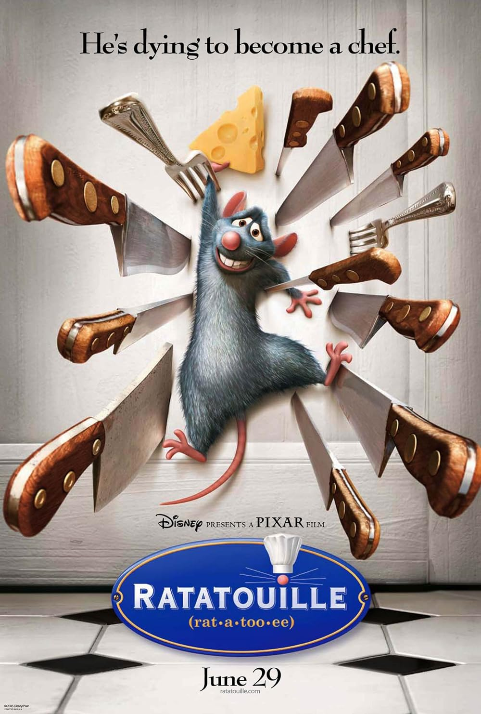

Click a poster to jump to the movie.


Synopsis: Ratatouille follows Remy, a rat living in Paris who has an extraordinary passion for cooking. While his family believes he should stick to scavenging, Remy dreams of becoming a professional chef. After finding himself inside a famous restaurant, he forms an unlikely partnership that allows him to pursue his passion and prove that creativity and talent can come from anywhere.
Back to topSynopsis: The Thing is a science-fiction horror film set at a remote Antarctic research station. After discovering a mysterious alien organism capable of perfectly imitating humans, the team begins to turn on one another as paranoia and fear grow. With no way to know who is still human, survival becomes a deadly psychological battle in the frozen isolation.
Back to topSynopsis: Green Book is a drama inspired by true events, following a classical pianist and his driver as they travel across the segregated American South in the 1960s. Relying on the “Green Book,” a guide for safe travel, the two men face discrimination, cultural differences, and personal challenges. Over time, their journey leads to understanding, respect, and an unexpected friendship.
Back to top